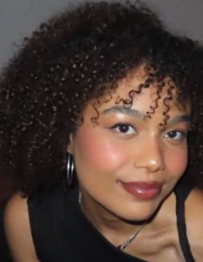

Meet the Team

Rumbie
Research Associate and Founder of HERUNO HALO
Zimbabwean-British founder, researcher and Sales & Marketing Specialist. Rumbie
holds a First-Class Law degree and MA Fashion Management with Marketing. Her interests lie in equality,
diversity, and inclusion strategies in fashion and consumer behaviours towards hard luxury market
products. She has had production assistant experience at Milan Fashion Week, Converse Afcon Watch Party
and NikeXJordan After Party and attended industry events including UK Black Business Show and Drapers
Fashion Summit and Awards.

Wijdane
Entrepreneur and Research Associate
Moroccan-British fashion researcher specialising in heritage craft, Amazigh textile
traditions, and digital cultural preservation. Wijdane designs technology-driven platforms supporting
artisanal community empowerment, combining qualitative fieldwork with brand strategy. Her work bridges
Indigenous North African textile heritage with contemporary sustainability discourse and consumer-facing
cultural storytelling.

Namruthaa
Entrepreneur & Research Associate
Bangalore-born fashion entrepreneur from a two-generation handloom textile family.
Namruthaa specialises in circular fashion, vintage aesthetics, and heirloom-inspired design. Combining her
BSc Fashion Design with an MA Fashion Management from De Montfort University, she is currently launching
her own brand rooted in heritage craft and sustainable practice.

Samia
PhD Candidate & Marketing Lead
Gulf-raised interdisciplinary researcher and creative strategist. Samia specialises
in luxury fashion ethics, digital innovation, and symbolic value construction. Her MA research examined
immersive technologies in prestige branding; her current PhD investigates property technology and value
systems in rapidly developing markets. Also active as a volunteer creative director for fashion brands.
Mine
DESIGNER & PROJECT MANAGER
Turkish-British leather goods designer specialising in heritage craftsmanship and
contemporary production.
Her MA research explores Gen Z’s role in reviving traditional leathercraft, with a forthcoming
publication. She is currently launching her luxury womenswear label,
while also contributing to the De Montfort University Museum’s Artefacts Live exhibition.

Adufe
Founder of Adufe Lagos & Talent Aquisition
Lagos-born fashion designer and founder of Adufe Lagos, Adufe specialises in African
fashion strategy and international market positioning for emerging designers. Her postgraduate research at
De Montfort University examines how African fashion brands navigate global systems, complemented by her
2025 Lumbers collaboration championing underrepresented fashion regions.

Manali
Founder of Ruii Clothing & Luxury Consultant
Mumbai-raised fashion designer and brand strategist with 8+ years across creative
industries. Manali specialises in sustainable fashion and luxury brand management, combining design craft
with strategic storytelling. Founder of childrenswear label Ruii Clothing, London Fashion Week alumna, and
MSc Luxury Fashion Brand Management graduate from Nottingham Trent University.

Kat
CREATIVE LEAD & ENTREPRENEUR
Law graduate and fashion creative with a passion for styling,
visual storytelling, and digital fashion culture.
Katerina enjoys creating engaging fashion content and using
social media as a platform for storytelling through style. As the founder of her own
styling-focused fashion page, she brings a fresh creative perspective shaped by her
love of fashion, branding, and audience connection.

Arsh
Fashion Journalist
British-Indian LLB Law student and freelance fashion commentator, specialising in
fashion communications and cultural analysis. Her work examines the relationship between consumer
behaviour and identity, and their influence on contemporary fashion narratives.
Thelma
Production Lead
Zimbabwean-British Product Assistant, coordinator and creative problem-solver.
Thelma holds a background in architecture alongside hands-on experience in administration, customer
service and design-led thinking.
Insights, Events & Opportunities
Where the
conversations happen.
Rooted in Opulence
Where Heritage Meets
Haute Couture.
Explore our latest thoughts, insights, and updates on fashion and sustainability.
Partner with 5Ws of Fashion
Your brand deserves an
audience that listens.
We are always excited to collaborate with forward-thinking brands that are genuinely committed to sustainable values. Whether it's through event partnership or research-led projects and collaborations, our team is always ready to assist at every opportunity — all at competitive rates. Sounds like you? Let's talk.
◆  ◆
◆  ◆ Adufe Lagos
◆ Ruii Clothing
◆
◆ Adufe Lagos
◆ Ruii Clothing
◆  ◆
◆  ◆
◆
◆ Adufe Lagos
◆ Ruii Clothing
◆
◆
◆
◆
◆ Adufe Lagos
◆ Ruii Clothing
◆
◆
◆
◆ Adufe Lagos
◆ Ruii Clothing
◆
◆
◆
◆
◆ Adufe Lagos
◆ Ruii Clothing
◆
◆